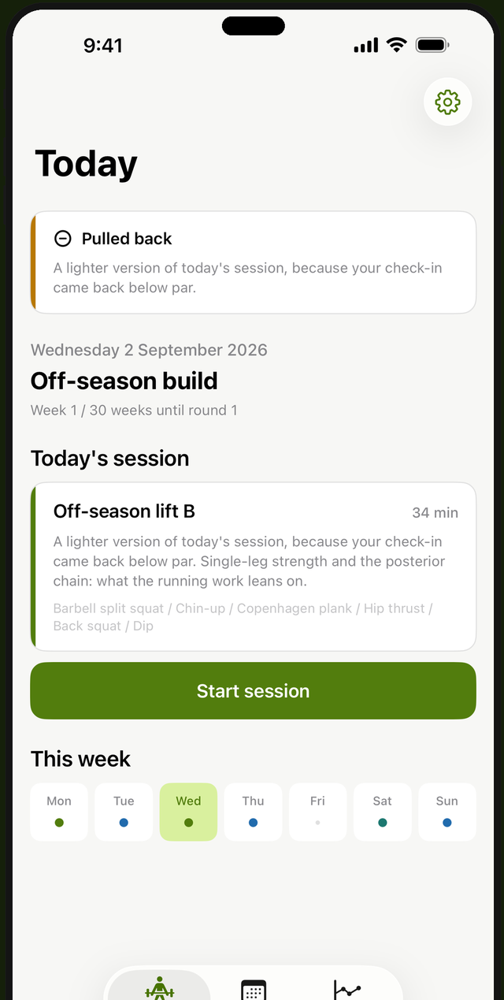
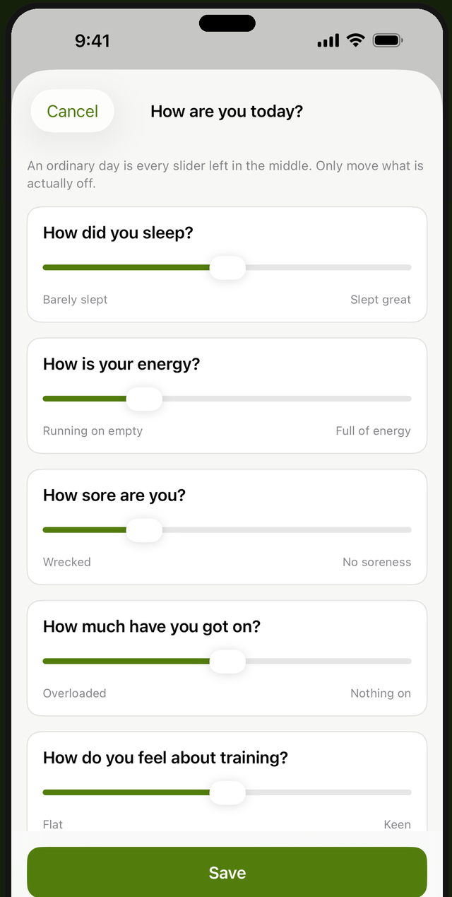
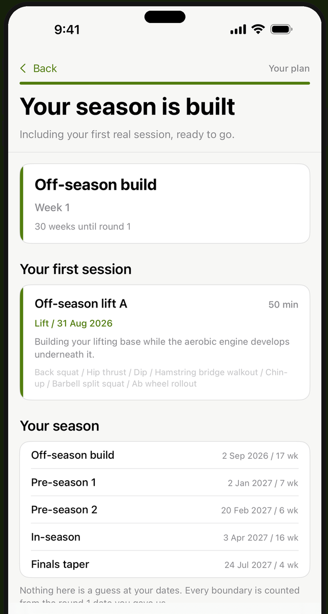

Off-season, pre-season and in-season training built around your season dates, your body and the gear you actually have. Aussie rules, rugby league, rugby union and soccer, all in the one app.
Building your whole plan is free, and your first real session is free to play. iPhone only. No account and no sign-in.

The strength, running and soft-tissue work that every football code shares. It isn't contact or tackle conditioning, and it doesn't pretend to be.
Usually a 22-year-old with a full gym and a season that starts when yours doesn't. This one is built from your own answers instead.
Your code, your age, your training history, your injuries, your equipment and the days you can actually train. Enter your round 1 date and the plan is periodised backwards from it and forwards through finals.
Thirty seconds on sleep, energy, soreness, stress and mood. Today's session goes lighter, shorter, or ahead as planned, and the reason sits on the session itself, including on the days nothing changes.
Off-season, pre-season, in-season, finals and the reset after them. Six phases generated from your real dates rather than a calendar that assumes everyone starts in November.
Full programs for a garage, a park or a loaded barbell. If your equipment tier is "not much", the running and bodyweight work carries the session rather than quietly assuming a rack you haven't got.
Conservative, age-appropriate caps apply automatically to under-18 athletes and lift the moment you turn 18. Masters and veteran players get a plan biased towards recovery and staying on the field.
While an area is flagged as sore, its work leaves your plan rather than being trained around, and any exercise ruled out by an injury or by your age never appears on any screen.

Not a preview. The full assessment, your whole season across all six phases, one real session generated from your own answers and fully playable, and one real check-in applied to it. No trial clock.
That's your actual Week 1, Day 1, and a check-in that really changes it.
Every session after that one is part of the subscription, which carries a free trial and a yearly option. The App Store shows the current price. Every session you have logged stays readable whether you're subscribed or not.

No account, no sign-in and no server of the developer's. Your assessment, your check-ins and every session you log stay on your phone unless you turn on the optional iCloud backup yourself. That is off by default, and it copies them to your own private iCloud so they come back if you lose the phone.
Footy Ready never sees your training either way, and there is no analytics or advertising SDK in the app.
If you look after a playing group, there's a one-page poster for the sheds or the team chat: what the app does, what it costs, and a code to scan.
There's nothing for a club to set up. Each player downloads it and subscribes on their own phone, so there's no money to collect at training and no list to keep. If you'd rather cover a whole squad at once, email mattsappdevelopment@gmail.com. Apple is bringing group purchases to the App Store, and an email is the fastest way to hear when they land.
Build your season in about five minutes, and play your first session today.